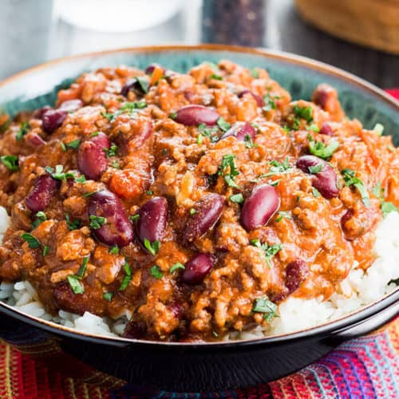

Chile Con Carne
A tasty and easy to make chile

Ingredients
- Beef mince
- Onion
- Garlic
- Carrots
- Mushrooms
- Fresh chiles
- Can of chopped tomatos
- Kidney beans
- Beef Stock
- Chile powder
- Ground cumin
- Fresh parsley
How to make
- Add one large onion and several cloves on garlic to a large casserole dish and allow them to soften for 4-5 minutes
- Add the minced beef as well as some chile powder, cumin, salt and pepper and stir until the mince is browned
- Add in several chopped carrots, mushrooms and chiles as well as the canned tomatos and kidney beans
- Add in roughly 3/4 pint of beef stock and leave to simmer for approx 2 hours
- Check the seasoning and adjust as required
- Serve with rice and some fresh parsley